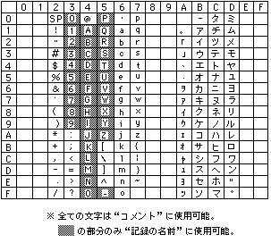

Return to previous page | Return to menu | Go to next page
Figure 1-1 shows the basic system flow. The processing, functions, and messages shown in this flow must be included.

* The flow may vary depending on the application.
Before starting the main game, be sure to check the initialization of the main unit RAM and cartridge RAM.
Do not start the game if either one is not initialized. In this case, inform the user and do the initialization work directly in the application, or perform the initialization process on the saved data management screen in the BOOT ROM of the SEGA Saturn main unit. Encourage users to do it.
* Be sure to use the BACKUPRAM BIOS when accessing the backup RAM.
* Main body RAM, cartridge RAM, and extended memory must not be formatted other than SEGASATURN_BACKUP_FORMAT.
Before starting the main game, check the existence of data that can be used by the application and check the remaining capacity of each backup RAM.
If your data does not exist or the remaining capacity is insufficient, a warning message is displayed according to the situation. (Specific message contents will be described later)
Always check for data corruption when loading data.
If the data is unusable, the user must be notified and the data must be displayed in some form so that it can be seen that it is unusable.
=== Recording rules ===
Example) In the case of “Panzer Lagoon” (3 places need to be saved) 1st place: PANZER_D_01 2nd place: PANZER_D_02 3rd place: PANZER_D_03 └ ────┬──┘└┬┘ , 8 characters common, only 3 characters can be changed
Used amount = ([Number of bytes used] +32) ÷ 64
Make sure to include some comments. Be sure to use ASCII characters (up to 10 half-width English / numbers / kana, see Table 1-1).
Since comments are used to know the details of saved data in detail, use them effectively in each application. If you can't find a usage, put the game name (information that can be identified) in katakana.
Example) Effective use of comments PANZER_D_01: 5 Men-Bouse (Continue information) PHANT_ST_01: Alfredo Nemachi (saved town name) SEGARACE_01: Time Attack M (Mode name) DERBY_ST_01: Mochika 69 (farm name)
* The user can freely rewrite the comment content.
Time stamp must be included , and User rewriting is not allowed . The display order of the records is in principle the youngest of the time stamps (the newest date of the saved date).
All applications that support backup must be able to save their records in either the main RAM or cartridge RAM. Even if the amount of recording used is too large to fit in the main unit RAM, the basic method is to support the main unit RAM with a simple storage method.
* Excludes extremely insignificant recorded contents (only high scores of shooting games, etc.)
* There is no particular rule on where to make this selection in the sequence.
* All characters can be used for “comments”. Only the part of “Record” can be used.
